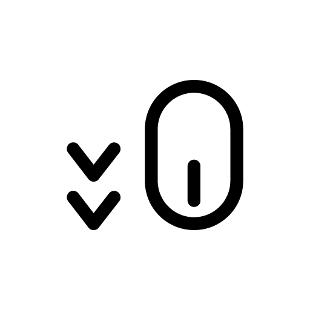

Asobi Space
My place to play

My place to play
Bienvenidos a Asobi Space, un espacio donde convergen mis pasiones y trabajos profesionales. Este sitio web es una bitácora personal donde comparto mis intereses, proyectos profesionales y hobbies. Asobi, que significa "jugar" en japonés, refleja la esencia de este espacio: un lugar para explorar, crear y disfrutar. Aquí, encontrarán actualizaciones sobre mis proyectos más recientes, y podrán acceder a un hub que conecta a mis diferentes iniciativas y pasatiempos.
Estoy entusiasmado por compartir este viaje con ustedes y espero que disfruten explorando Asobi Space tanto como yo disfruto creándolo.
Carlos CastroTe ayudo a implementar soluciones de inteligencia artificial personalizadas para optimizar procesos y tomar decisiones basadas en datos. Con un enfoque en la integración estratégica, desarrollo modelos avanzados y estrategias que maximizan la eficiencia, reducen costos y potencian la innovación en tu negocio. Desde la conceptualización hasta la implementación, te acompaño en cada paso para garantizar resultados impactantes y sostenibles.
Ampliar informaciónConvierte datos complejos en insights accionables con técnicas avanzadas de ciencia de datos. Utilizo herramientas de vanguardia como Python, R y plataformas de big data para analizar grandes volúmenes de información, identificar patrones clave y ofrecer soluciones personalizadas que mejoren la toma de decisiones y generen valor estratégico para tu organización.
Ampliar información
Diseño e implemento modelos predictivos para resolver problemas específicos de tu industria. Con un enfoque en algoritmos como redes neuronales, árboles de decisión y aprendizaje profundo, desarrollo soluciones que predicen tendencias, optimizan operaciones y mejoran resultados, adaptándome a las necesidades únicas de tu sector para garantizar precisión y escalabilidad.
Ampliar información
Soluciones de visión por computadora para detección de objetos, reconocimiento facial y más. Implemento tecnologías avanzadas como OpenCV y TensorFlow para crear sistemas que analicen imágenes y videos en tiempo real, mejorando procesos en retail, seguridad, salud y manufactura, con un enfoque en la personalización y la eficiencia operativa.
Ampliar informaciónExploramos cómo la inteligencia artificial está revolucionando la manufactura...
Leer másUna introducción a cómo crear modelos predictivos con machine learning...
Leer más
Cómo la visión por computadora mejora la experiencia del cliente...
Leer másDirección: Av. Tecnológica 123, Ciudad Digital, Sed ultricies dictum eleifend. Ut odio libero, maximus vitae quam vitae, sagittis ultricies nulla. Sed porttitor ullamcorper sapien eu gravida. Phasellus a mauris sollicitudin, posuere orci eu.